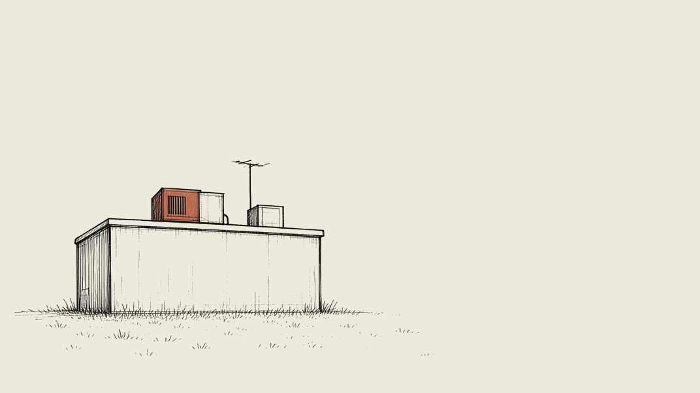

Stories we're following
Brunswick's data-center pause
Last updated
What's happening
On June 1, Brunswick paused new, enlarged, or expanded data centers of one megawatt or greater. That 180-day pause expires Nov. 28. On Nov. 2, the Town Council set a public hearing for Monday, Nov. 16, on extending the pause another 180 days, so staff can finish the technical work an outright ban would need. That work includes a grid-impact study that still has no consultant. An August workshop had a majority of councilors favoring a ban.

The timeline
How the plan has moved
-
June 1, 2026
Council passes a 180-day pause
A 9-0 vote paused new, enlarged, or expanded data centers of one megawatt or greater.
-
Aug. 3, 2026
Workshop leans toward a ban
A majority of councilors favored an outright ban on major data centers. Staff had presented a draft of possible zoning rules.
-
Nov. 2, 2026
Council sets a Nov. 16 hearing
The Council set a public hearing on a further 180-day extension.
-
Next Nov. 16, 2026
Public hearing on the extension
6:30 p.m. in Council Chambers and on Zoom. The hearing is open to the public.
-
Nov. 28, 2026
The current pause expires
Unless the Council extends it, the June 1 pause ends this day.
-
Proposed
A further 180-day extension
If approved, the draft ordinance says the extension would take effect Nov. 28 and last another 180 days.
Next
Council hearing Mon., Nov. 16, 6:30 p.m.
Regular Town Council meeting, Council Chambers at 85 Union Street, and on Zoom. The hearing is open to the public. The same meeting also has a hearing on a municipal impervious-cover waiver.
The pause
Key points
Current pause
180
days. It ends Nov. 28.
Proposed
180
more days, if extended
Nothing about the extension has been approved.
- Covers data centers of one megawatt or greater
- Applies to new, enlarged, or expanded facilities
- Concerns include power, water, noise, and other environmental effects
- Staff have not found a consultant for a grid-impact study
- No specific new large project has been named
The stakes
Who decides
Town Council
Adopted the June 1 pause. On Nov. 2 it set the Nov. 16 hearing. It is the body that would approve or reject a further 180-day extension.
Town staff
Still finishing the technical work an outright ban would need. A grid-impact study is part of that work, and planning staff have not found a consultant to do it.
What's being decided
Whether to extend the pause another 180 days. An August workshop majority favored an outright ban, and the town says more technical and legal work is still needed for that path.
Gaps
Not yet available
- A consultant for the grid-impact study
- Draft ordinance language for an outright ban
- The result of the Nov. 16 hearing
- A published calendar date for when a new 180-day extension would end
- The Nov. 16 meeting agenda packet
- Official minutes of the Nov. 2 meeting
- Independent news coverage of the November extension
- A named developer or proposed site for a new large data center
Records
Details and sources
- An Oct. 26, 2026 memo from Planning Director Julie Erdman says the Town Council adopted a 180-day moratorium on June 1 on the siting, permitting, construction, or operation of new, enlarged, or expanded data centers with an electrical capacity of one megawatt or greater. Areas of concern include electrical and water infrastructure, noise, and other environmental impacts.
- The same memo says that at an Aug. 3 workshop, staff presented a preliminary draft of possible zoning rules, and that a majority of councilors favored an outright prohibition of major data centers. The Town Attorney advised that a prohibition would need an in-depth analysis, which could include a grid-impact study by a qualified energy professional. As of the memo, planning staff had not identified a consultant available to do that analysis.
- A draft extension attached to that memo would take effect when the current pause expires on Nov. 28, 2026, and remain in effect for 180 days from that date, unless the Council extends, repeals, or changes it. The draft does not name a calendar end date.
- Minutes of the June 1, 2026 Town Council meeting say the Council held a public hearing and then approved a data-center moratorium on a motion that carried with nine yeas.
- The Nov. 2, 2026 Town Council agenda asked the Council to set a public hearing for Nov. 16 on extending the moratorium. Official minutes of that meeting were not posted as of Nov. 10. A legal notice published Nov. 5 and the town calendar both list the Nov. 16 hearing.
- The town calendar lists a Regular Town Council Meeting on Monday, Nov. 16, 2026, at 6:30 p.m., live in Council Chambers and on Zoom, at Town Hall, 85 Union Street. The legal notice also places the hearing in the Council Chambers at 85 Union Street. The same meeting includes a hearing on a zoning amendment that would let the Planning Board waive or modify the maximum impervious-cover limit for municipal facilities.
- The Press Herald reported on June 1 that the Council approved the 180-day pause after Gov. Janet Mills vetoed a bill that would have restricted large data centers statewide; that the town would not process applications for new or expanded data centers of 1 megawatt or greater; that Brunswick has an existing, smaller data center on Brunswick Landing owned by FirstLight; and that town officials had not indicated any proposals for larger data centers at that time.
- As of Nov. 10, the town's Agenda Center did not yet list a packet for the Nov. 16 meeting. A search of the Press Herald, the Times Record, and News Center Maine did not turn up coverage of the November extension itself.
- Town of Brunswick memo and draft extension, Oct. 26, 2026
- Town Council agenda, Nov. 2, 2026
- Town Council minutes, June 1, 2026
- Town calendar, Nov. 16 Regular Town Council Meeting
- Legal notice reprint, Nov. 5, 2026 (NoticeRegistry)
- Portland Press Herald, June 1, 2026